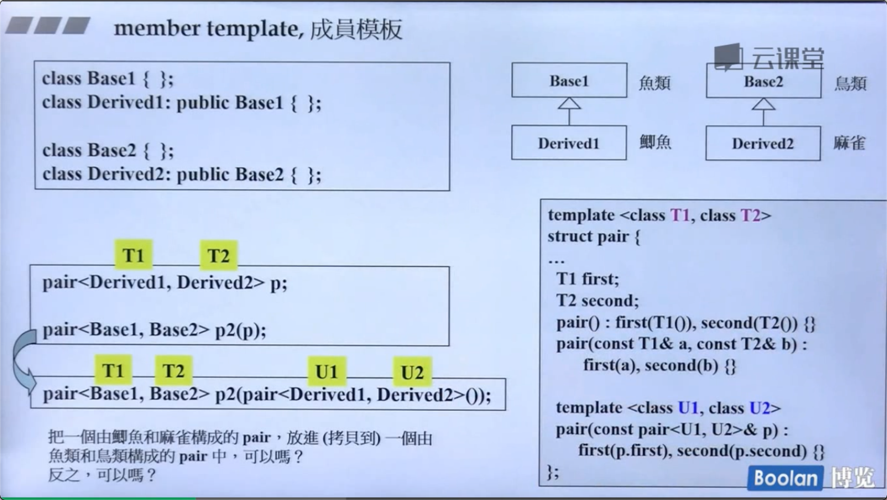

conversion function 转换函数
class Fraction{
public:
Fraction(int num,int den=1)
: m_mumerator(num),m_denominator(den) { }
operator double() const {
return (double) (m_numerator/,_denominator);
}
private:
int m_numerator;
int m_denominator;
}
operator double()注意： 1，不需要写返回类型（本来就是返回double，写了还可能写错） 2，加const（一定不会改数据，也不需要参数）
non-explicit one argument constructor
class Fraction{
public:
Fraction(int num,int den=1)
: m_mumerator(num),m_denominator(den) { }
Fraction operator+(const Fraction & f) {
return Fraction(...);
}
private:
int m_numerator;
int m_denominator;
}
Fraction f(3,5);
Fraction d = f+4;
4会调构造函数，变成 Fraction类型。两个Fraction可以执行 + 操作。
但是，如果这时候再加上上一节的 conversion 函数，
f+4 .f可以变成double；4可以变成Fraction 。两条路都能走。编译器就不知道怎么相加了。
这时候怎么让编译器明确选哪条路呢？
explicit
构造函数写成
explicit Fraction(int num,int den=1)
: m_mumerator(num),m_denominator(den) { }
这个关键字告诉编译器。不要私自用这个构造函数。只有我主动用才能构造。
标准库里用到的转换函数：

pointer-like classes
智能指针 看圆圈里的，
看圆圈里的，->这个符号比较特殊。 返回的结果会一直调用下去。所以 重载后的->解引用返回了 px后，自动又出现一个 ->往下指向method()
迭代器

这里不太懂。
function-like classes
重载了 （）的类。
namespace
namespace jj01
{
void func(){ ... }
}
jjo1::func();
Template
类模板使用的时候要指明类型。
函数模板不需要。 因为编译器可以做“实参推导”，根据你传进的参数，推出要调用什么类型。
模板函数都是半编译。最开始的时候编译能过，但是传入参数后，能不能编译不一定了。
EX：<T> bool isbigger(T a,T b){ return a>b} 模板这么写没问题。但是传进来两个石头。class石头如果重载了 > 就能编译过。不然就不行了。
member Template

在外层的T确定之后，里面的U也可以变化。
第9集。Mark。
specialization 特化

偏特化
个数上的偏
泛化的T。如果可以为1个位的东西。特化一下，就可以省空间。
范围上的偏

就是繁化过的东西再泛化一次。这个东西就有两个泛化的版本。
注意区分这个和第一个完全的特化。
template template parameter 模板模板参数